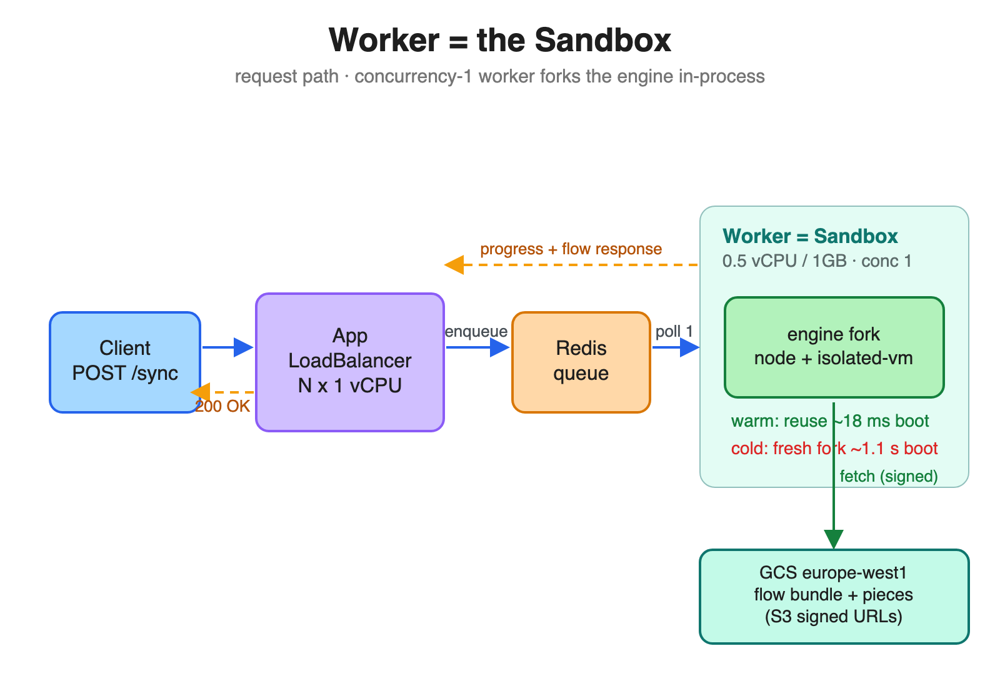
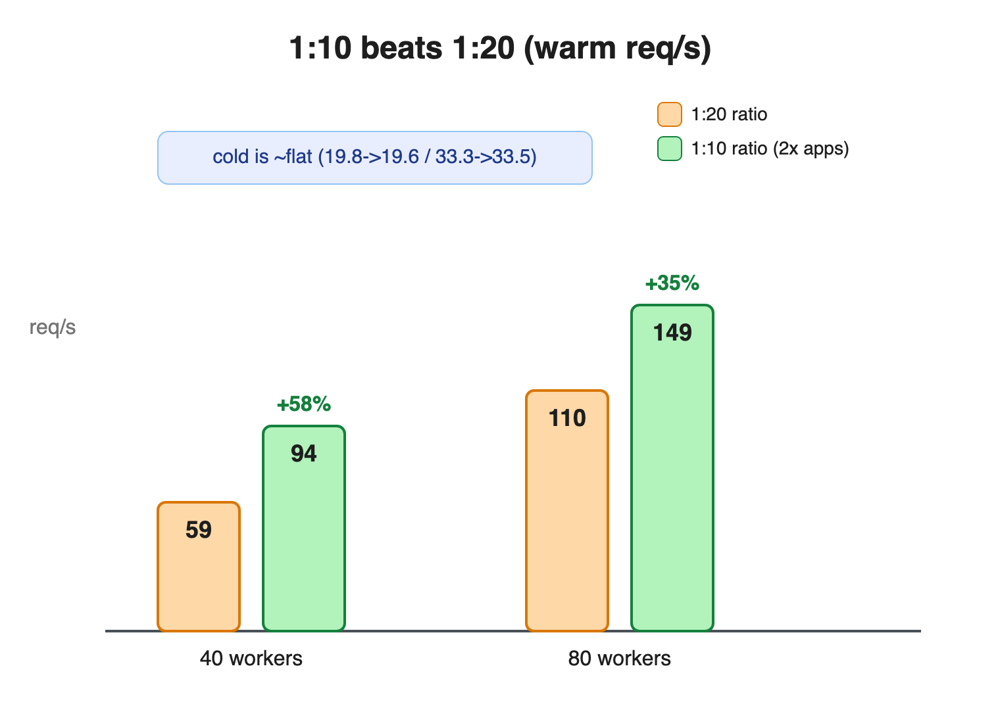
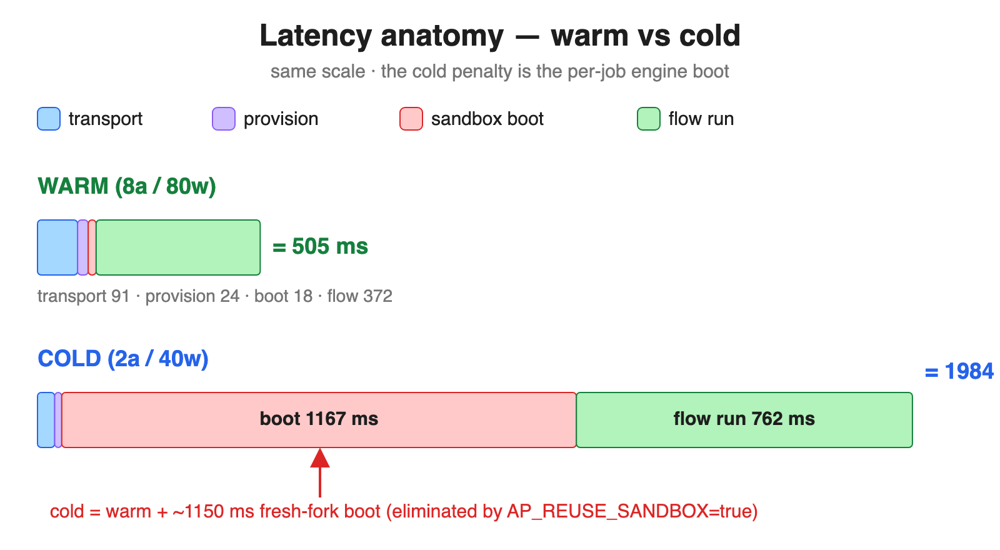
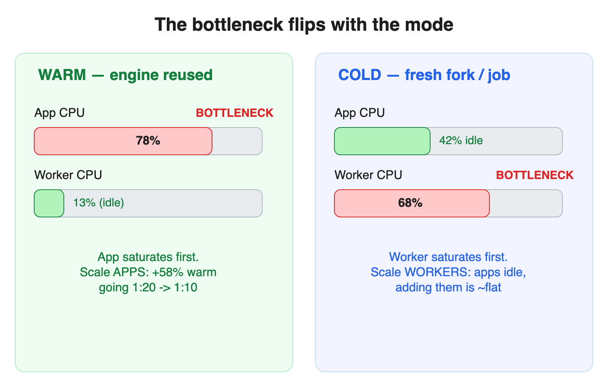

Does a 1:10 app:worker ratio beat 1:20? · app = 1 vCPU / 1 GB · worker = 0.5 vCPU / 1 GB · -c matched to worker count · warm vs cold
e2-standard-4 × 14 nodes, europe-west1-b. Each worker = one sandbox,
concurrency 1, in-process engine fork (SANDBOX_CODE_ONLY: node child + isolated-vm),
hard-capped 0.5 vCPU / 1 GB. App pods @ 1 vCPU / 1 GB. Pairs: 1:20 = 2a/40w &
4a/80w; 1:10 = 4a/40w & 8a/80w (ratio is the only variable). Object store = real same-region
GCS bucket (europe-west1) over the S3-interop endpoint (storage.googleapis.com,
path-style + SigV4 presigned URLs) — engine pulls flow bundle + piece archives via signed links.
Postgres + Redis in-cluster. Load: hey, -c = worker count (40 or 80) so requests
don't queue behind the concurrency-1 workers — latency reflects real service time, not backlog.
AP_REUSE_SANDBOX=true (engine process reused between jobs).
cold = AP_REUSE_SANDBOX=false (fresh engine fork + boot every job — the realistic
isolation guarantee).
AP_PRE_WARM_CACHE up-front install step is gone;
it no longer exists). After first use the piece + flow bundle live on the worker's local disk, so warm
runs do zero install work — in this benchmark flow-bundle download ≈ 2 ms and
piece install ≈ 3–13 ms. On a cold/first install the archive is pulled from the
same-region S3 bucket via a signed link (here: GCS europe-west1 over the S3-interop endpoint),
so even the first install is a fast in-region fetch rather than a slow npm/registry round-trip. Cache
warmth comes from running long-lived worker replicas, not a warm-up flag.

| config | warm req/s | cold req/s | app CPU/pod (cold) | worker CPU/pod (cold) |
|---|---|---|---|---|
| 2 app · 40 w | 59.1 | 19.8 | 415m (42%) | 346m (69%) |
| 4 app · 40 w | 93.5 | 19.6 | 257m (26%) | 339m (68%) |
| 4 app · 80 w | 110.5 | 33.3 | 0m (0%) | 0m (0%) |
| 8 app · 80 w | 148.9 | 33.5 | 235m (24%) | 336m (67%) |
app limit 1000m · worker limit 500m. The bottleneck is whoever saturates its cap first.

| boot | throughput | avg latency | p100 | sandbox boot | flow run | app CPU/pod (of 1000m) |
worker CPU/pod (of 500m) |
req/s per worker |
|---|---|---|---|---|---|---|---|---|
| warm | 59.1 | 671 ms | 4.34s | 12 ms | 477 ms | 782m (78%) | 63m (13%) | 1.48 |
| cold | 19.8 | 1984 ms | 4.82s | 1167 ms | 762 ms | 415m (42%) | 346m (69%) | 0.49 |
| boot | throughput | avg latency | p100 | sandbox boot | flow run | app CPU/pod (of 1000m) |
worker CPU/pod (of 500m) |
req/s per worker |
|---|---|---|---|---|---|---|---|---|
| warm | 93.5 | 413 ms | 4.66s | 12 ms | 311 ms | 335m (34%) | 65m (13%) | 2.34 |
| cold | 19.6 | 2003 ms | 4.42s | 1182 ms | 766 ms | 257m (26%) | 339m (68%) | 0.49 |
| boot | throughput | avg latency | p100 | sandbox boot | flow run | app CPU/pod (of 1000m) |
worker CPU/pod (of 500m) |
req/s per worker |
|---|---|---|---|---|---|---|---|---|
| warm | 110.5 | 709 ms | 6.66s | 18 ms | 505 ms | 354m (35%) | 65m (13%) | 1.38 |
| cold | 33.3 | 2328 ms | 6.22s | — ms | — ms | 0m (0%) | 0m (0%) | 0.42 |
| boot | throughput | avg latency | p100 | sandbox boot | flow run | app CPU/pod (of 1000m) |
worker CPU/pod (of 500m) |
req/s per worker |
|---|---|---|---|---|---|---|---|---|
| warm | 148.9 | 505 ms | 6.43s | 18 ms | 372 ms | 148m (15%) | 34m (7%) | 1.86 |
| cold | 33.5 | 2292 ms | 5.41s | 1345 ms | 866 ms | 235m (24%) | 336m (67%) | 0.42 |

The flow. A 4-node synchronous webhook flow: Webhook trigger
(catch_webhook, /sync — holds the HTTP connection until the flow returns) →
Math Helper (addition_math, 2 + 3) → Code step in isolated-vm
(return { result: Number(inputs.sum) + 1 }) → Webhook response
(sendFlowResponse). The actual compute is sub-millisecond; everything below is orchestration.
| layer | WARM (8a/80w) | COLD (2a/40w) | what it is |
|---|---|---|---|
| app ingress + Redis + worker poll | ~91 ms | ~39 ms | webhook→app→Redis enqueue→worker dequeue, + response delivery back |
| provision | 24 ms | 16 ms | flow-bundle + piece + engine install — all disk-cache hits (clean-cache=false) |
| sandbox boot | 18 ms | 1167 ms | warm = engine process reused; cold = fresh fork + Node start + bundle parse + isolated-vm init + socket connect |
| flow run (4 steps) | 372 ms | 762 ms | per-step engine→app callbacks + isolated-vm code + response handshake |
| end-to-end avg | 505 ms | 1984 ms | p50 446/1957 · p95 648/2183 · p99 3817/2986 ms |
--no-node-snapshot penalty forced by isolated-vm), 694 KB engine-bundle
parse/compile (the bulk), and socket.io connect (~90 ms). In isolated profiling this is ~570 ms; under
sustained cold load it inflates to ~1167 ms because ~40 workers fork at once, each capped at 0.5 CPU,
and contend — boot is CPU-bound. Warm reuses the process and pays just 18 ms.
sendFlowResponse), plus the
isolated-vm code call. Direct evidence it's app-callback-bound: adding apps cut warm flow-run
from 477 ms (1:20) → 372 ms (1:10) with identical steps — pure compute wouldn't move. The cold
flow-run is ~2× warm because the just-forked engine runs on a cold V8 (no JIT warmup) while contending
for CPU with 39 other booting engines — CPU contention + cold JIT, not extra work.
Layer numbers are measured (hey + engine timing logs). Per-step splits weren't captured — the engine logged flow-run as one aggregate — so the within-step attribution is structural, not timed.

Question: at app = 1 vCPU, does halving the ratio from 1:20 to 1:10 (twice as many apps per worker) buy more throughput?| workers | mode | 1:20 | 1:10 | Δ |
|---|---|---|---|---|
| 40 w | warm | 59.1 (2a) | 93.5 (4a) | +58% |
| cold | 19.8 | 19.6 | -1% | |
| 80 w | warm | 110.5 (4a) | 148.9 (8a) | +35% |
| cold | 33.3 | 33.5 | +1% |
Generated from raw hey + kubectl top
samples and worker-pod timing logs. Cluster + GCS bucket torn down after the run.